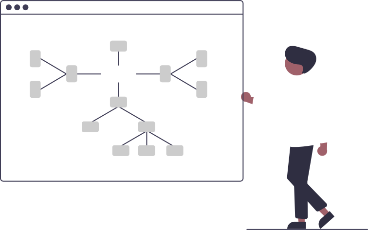

Bem-vindo ao nosso site! Uma plataforma educativa dedicada a informar e sensibilizaro público sobre a Lei Geral de Proteção de Dados (Lei nº 13.709/2018). Através de recursos interativos e conteúdo acessível, o site visa promover a compreensão dos direitos e responsabilidades associados à proteção de dados pessoais, incentivando boas práticas e garantindo a privacidade e segurança das informações na era digital.
LGPD L13709 - Facilitada para a sociedade
A Lei Geral de Proteção de Dados (LGPD) brasileira, Lei nº 13.709/2018, foi sancionada em agosto de 2018 e entrou em vigor em setembro de 2020. Inspirada no Regulamento Geral sobre a Proteção de Dados (GDPR) da União Europeia, a LGPD foi criada para preencher a lacuna na legislação brasileira sobre a proteção de dados pessoais. Antes da LGPD, o Brasil não possuía uma lei específica que regulamentasse o tratamento de dados pessoais, o que resultava em práticas inconsistentes e inseguras. A criação da LGPD marca um importante avanço na proteção dos direitos fundamentais de privacidade e liberdade dos cidadãos brasileiros, promovendo uma cultura de transparência e responsabilidade no tratamento de dados.

A LGPD estabelece princípios fundamentais para o tratamento de dados pessoais, garantindo que sejam realizados de forma ética e segura. Entre os principais princípios estão a finalidade, a adequação, a necessidade, a livre acesso, a qualidade dos dados, a transparência, a segurança, a prevenção, a não discriminação e a responsabilização. A lei define dados pessoais como qualquer informação relacionada a uma pessoa natural identificada ou identificável, dados não somentediretos, como documentos e endereço, mas também dados sensíveis como aqueles que revelam origem racial, convicção religiosa, opinião política, dados genéticos, entre outros. Esses princípios e definições são essenciais para garantir a proteção adequada dos dados pessoais e a conformidade com a LGPD. Assista o próximo vídeo onde o influenciador Nilton Kleina do CANAL TECMUNDO explica sobre o tema no quadro ENTENDA do canal e após o vídeo tenha acesso a lei completa.